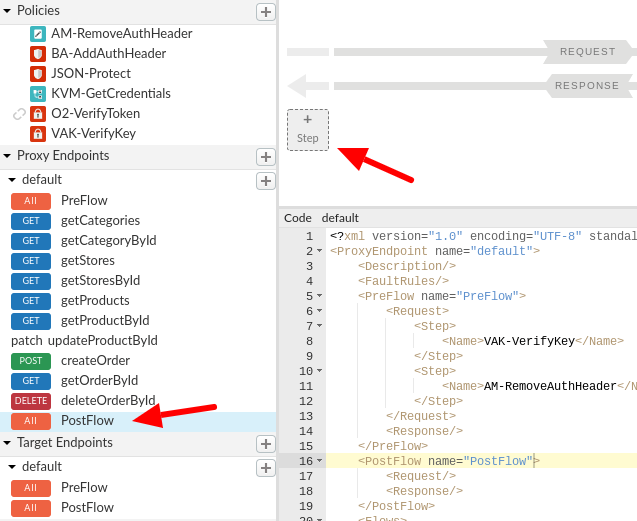
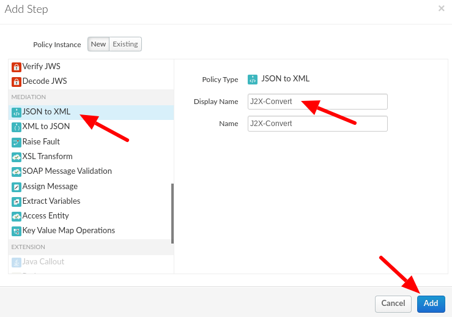
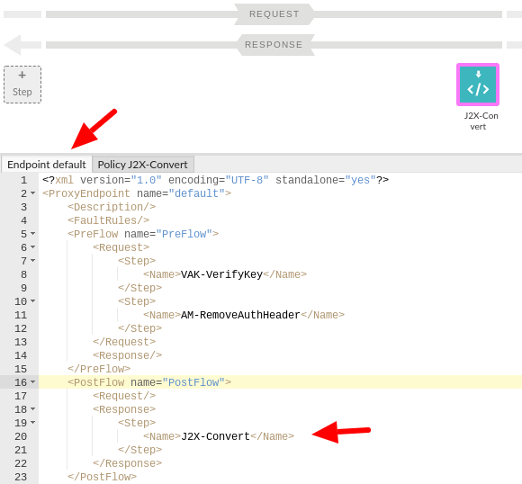
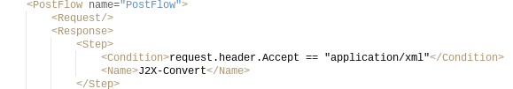
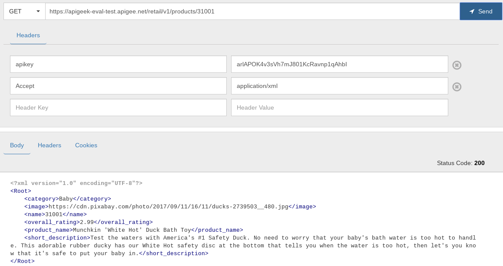

Clients to your API may have the need to use data in different formats than the default format returned by your API.
We'll add the option to allow the user to select between JSON and XML.
What you'll learn
- How to easily convert between JSON and XML
What you'll need
- Your proxy created in the previous lab
Use case
You want to allow the option to the clients of the API to choose the response format.
Download a working solution to the previous lab as a proxy bundle ZIP file:
Prerequisites:
- Target Server: TS-Retail (instructions in lab 2)
- Product, Developer and App (instructions in lab 3)
- Key Value Map: ProductsKVM (instructions in lab 6)
Find your spec ID. When you open your spec in the spec editor, the link will be in this format, with the spec ID at the end of the URL:
https://apigee.com/organizations/YOURORG/specs/folder/FOLDERID/editor/YOURSPECID
Navigate to your proxy and upload the bundle as a new revision:

Select the association.json resource. Replace YOURORG and YOURSPECID with the values from the spec URL.

Once updated, the association.json should look something like this:
{
"url": "/organizations/apigeek-eval/specs/doc/207966/content"
}
Click Save to save your proxy. Open the Deployment menu, and check the deployment status. Click on test to deploy this revision of the proxy.

Test will be green when it is deployed.

- Add a JSONtoXML policy with a condition
HTTP allows for the client to choose the format of the response via the ‘Accept' header. The content of the header follows the same guidelines as the Content-Type header, meaning that the same MIME types are allowed.
In our API so far, we have been using application/json only, we'll now add the option for clients to choose XML responses.
Select the ‘PostFlow' in the Proxy Endpoint (not the Target Endpoint), and click on the ‘+ Step' on the response flow (bottom portion)

Select the JSON to XML policy, and change the display name:
J2X-Convert
Click Add:

In the configuration panel, make sure you see the Endpoint XML and not the policy configuration. Switch tabs as needed:

Inside the <Step> tag for the JSON to XML policy, add the following condition:
<Condition>request.header.Accept == "application/xml"</Condition>
Save and deploy your proxy. Test it with the following request:
URL:
GET /products/31001Headers:
apikey: {key of application}
Accept: application/xmlYou should get XML in the response:

You have successfully implemented a simple way to provide responses in multiple formats from your API.